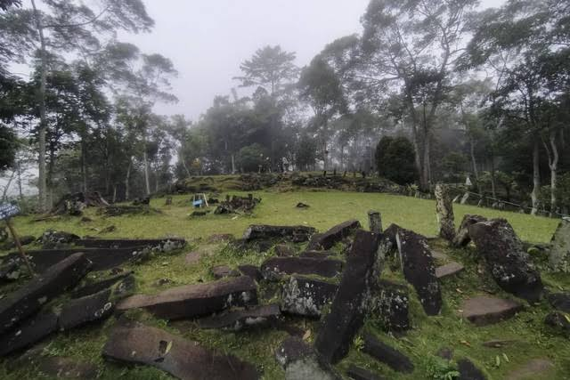
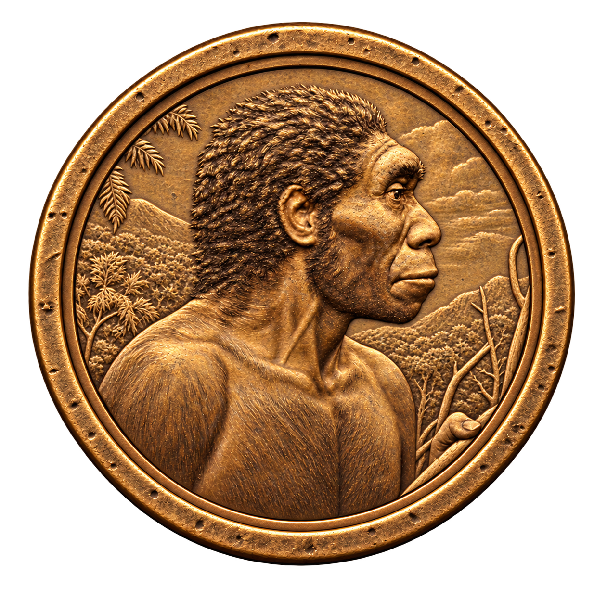
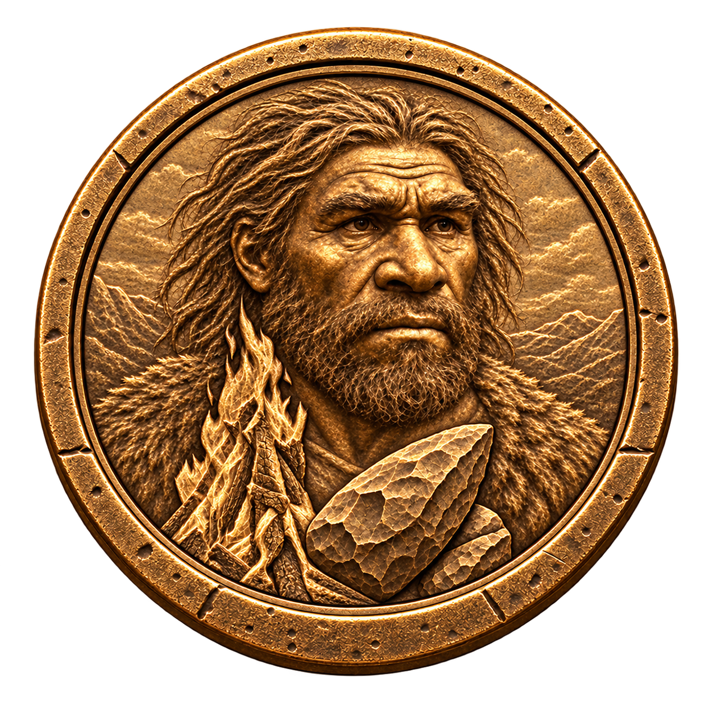

Baca jejak penelitiannya, lalu kumpulkan kenangan dari perjalananmu.
About Lithera
Ruang untuk mengenal sejarah lebih dekat.
Lithera adalah ruang eksplorasi digital untuk situs-situs bersejarah. Di sini,
cerita, arsip, dan pengalaman visual dirangkai menjadi perjalanan yang bisa dijelajahi.
Melalui tur virtual, arsip terbuka, kuis, dan badge, Lithera mengajak pengunjung
menemukan kembali jejak masa lalu dengan cara yang lebih dekat dengan generasi sekarang.
Geser untuk melihat sekitar. Arahkan kursor ke bagian bawah panorama, lalu klik panah yang muncul untuk berpindah titik.
Geser untuk melihat sekitar · Arahkan kursor ke bawah, lalu klik panah untuk berjalan · Gulir atau cubit untuk zoom
Panorama belum dapat dimuat. Periksa koneksi lalu muat ulang halaman. Arsip tetap dapat diakses lewat menu Arsip.
Klik ikon i pada kedua batu untuk melihat model 3D, membaca penjelasan dengan rujukan penelitian, dan mengerjakan kuis. Identifikasi masing-masing batu masih bersifat sementara.
Ruang baca Lithera
Arsip & cerita
Selalu ada cerita di balik sebuah tempat. Temukan jejaknya melalui penelitian dan catatan perjalanan.

Kendenglembu
Dari catatan para peneliti
Terbuka untuk semua
Kendenglembu
Awal kolonisasi Austronesia di tenggara Pulau Jawa: Perspektif Situs Kendenglembu
Penelitian ini membandingkan data arkeologi dan linguistik mengenai migrasi penutur Dalam artikel ini, Austronesia merujuk pada kelompok bahasa dan masyarakat penuturnya, bukan spesies manusia. Kajian migrasinya menggabungkan bukti bahasa dan arkeologi.. Temuan Kendenglembu membuka hipotesis jalur dari Sulawesi Barat; ini merupakan interpretasi penelitian, bukan kesimpulan tunggal tentang asal-usul penduduk.
Ringkasan dan glosarium diadaptasi dari artikel di atas. Tahun sitasi mengikuti tahun edisi jurnal (2011); portal BRIN menampilkan tanggal publikasi 2024 yang berbeda. Referensi ini bukan atribusi foto panorama. Identitas lokasi, pembuat, tanggal, dan izin foto demo belum diverifikasi.
Kenali kedua batu
2 objek · 6 soal
Jejak yangtersimpan.
Dokumentasi foto dari koleksi arsip Lithera.
Gulir untuk menjelajah ↓
Sedikit penasaran, banyak penemuan
Koleksi penjelajah
Dua batu, enam soal, tiga badge. Setiap dua soal berbeda yang dijawab benar membuka satu badge. Mengulang soal tidak menambah progres; badge lama tetap tersimpan.
0/ 3
badge terkumpul
Perjalanan besarmu dimulai dari satu badge.
0%
Temui koleksimu
Jawab, temukan, kumpulkan
LITHERASertifikat Penjelajah


3 badge · 1 perjalanan
Pencapaian berikutnya
Satu koleksi, satu pencapaian.
Kumpulkan semua badge untuk membuka sertifikat digital.